Carnet de voyage · No. 12
Un jour à Paris 起床到深夜·從凱旋門走出地鐵·走到歌劇院旁
15 · V · 2026 · Vendredi · ⛅ 18°C
§ Un
Hôtel Parisien · Champs-Élysées · 11h00
睡到十一點 la grasse matinée
A slow start, by design.
第一個完整的巴黎白天,我們睡到十一點才出門。La grasse matinée —— 法文字面是「肥美的早晨」,專指那種睡到飽、不急著起來的早上。Day 11 從里斯本一路飛到巴黎、半夜還去香榭麗舍 Five Guys 吃宵夜,身體早就在抗議,睡飽算是一種對昨天的補償。
阿米中午前訂好了餐廳,我們穿過 CABBIE 旁邊那條街、走到凱旋門地鐵站,準備搭 RER 進城。早午餐(brunch)被推遲成「午午餐」(lunch-lunch),這種行程鬆動感倒是很巴黎。
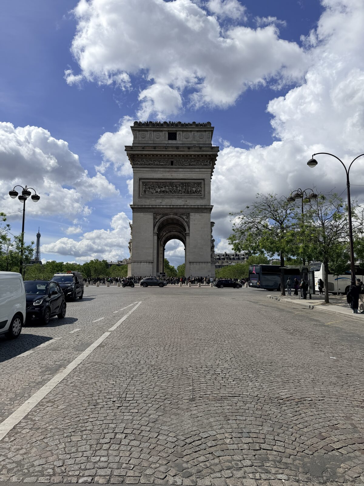
Arc de Triomphe · 11:42 天空厚厚的雲,左後方艾菲爾鐵塔露了個臉。同一座凱旋門,Day 11 是珊瑚粉夕陽,Day 12 是雲層飽滿的藍天 —— 兩種臉,同一個地標。
小知識 · 凱旋門所在的圓環正式名稱叫 Place Charles de Gaulle,但巴黎人習慣叫舊名「Place de l'Étoile」—— 星之廣場,因為十二條大道從這裡放射出去,像一顆星。
§ Deux
RER A · vers Châtelet · 12h15
雙層地鐵 à deux étages
The double-decker subway.
買了 Navigo Easy 卡,進站直接刷。從 Charles de Gaulle – Étoile 站搭 RER A 線往東進城。月台一進來車就到了 —— 是雙層車廂,白色配薄荷綠車身。米米看到立刻精神大振:「車車!」
嚴格來說 RER 不是 métro 是區域快線(Réseau Express Régional),但對外國人來說都是地鐵。雙層車廂叫 MI 09 / MI 2N ,設計成兩層是因為 RER A 是全歐洲最繁忙的通勤線,日均超過百萬人次,單層裝不下。米米第一次搭雙層,在手扶梯上一直回頭。
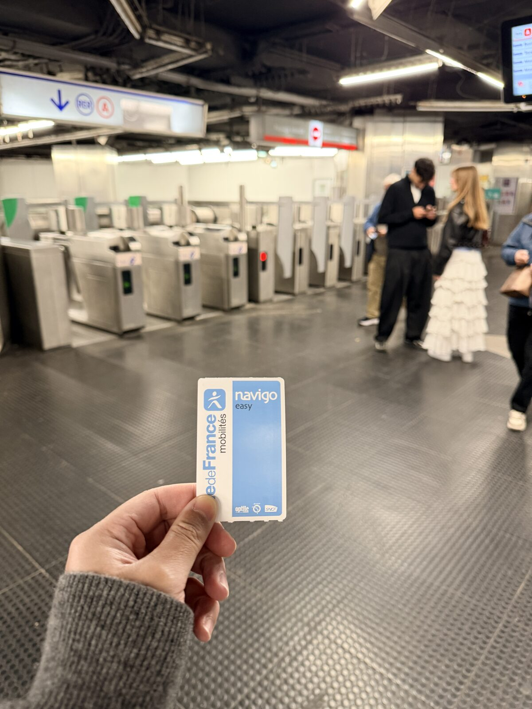
Navigo Easy
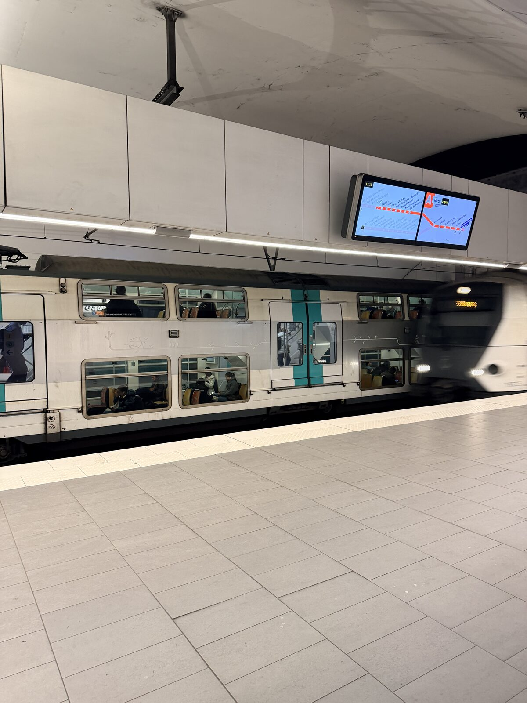
MI 2N · 12:15
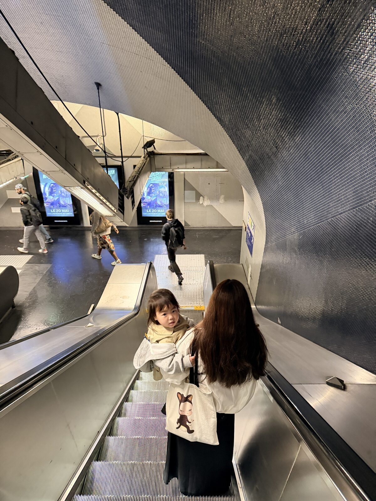
Étoile Station · escalator 星戰 Mandalorian 廣告 LE 20 MAI —— 巴黎這週的新片檔期。米米被阿米抱著下手扶梯,回頭看鏡頭。
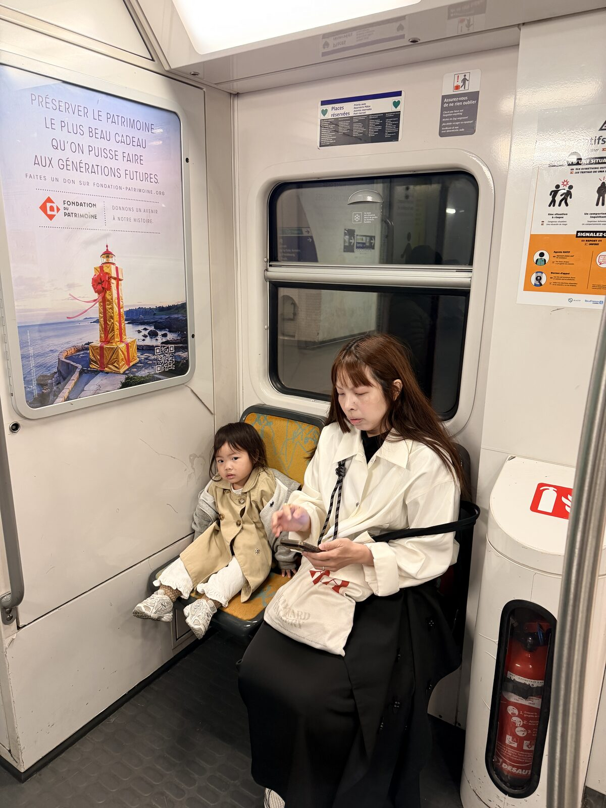
RER A · interior 「PRÉSERVER LE PATRIMOINE, LE PLUS BEAU CADEAU QU'ON PUISSE FAIRE AUX GÉNÉRATIONS FUTURES」—— 保護文化遺產,是我們能留給後代最美的禮物。海報旁邊坐著快兩歲的米米。
§ Trois
Restaurant ANOI · 9ème · 13h00
越南河粉 Pho à Paris
"It's been so long since I had Asian food."
出站走幾步,先看到老佛爺百貨 —— 三年前來過,等下會再回來。阿米先帶我們鑽進巷子,直奔她訂的餐廳:ANOI ,招牌反字設計(從店內角度看是正字),紅色 awning 寫著 CAFÉ · RESTAURANT · TAPAS 。實際上是一間越南菜。
我們有個朋友來巴黎旅行,號稱「每天吃一餐河粉」—— 起初我覺得太誇張,進到 ANOI 看菜單才懂。越南菜在巴黎不是外國菜,是 1950 年代就在的家鄉菜 :法國從 19 世紀殖民越南到 1954 年,二戰後大量越南人移居巴黎,13 區整個變成「小亞洲」。Phở 、cuốn 、nem ,在巴黎跟 baguette 一樣有歷史。
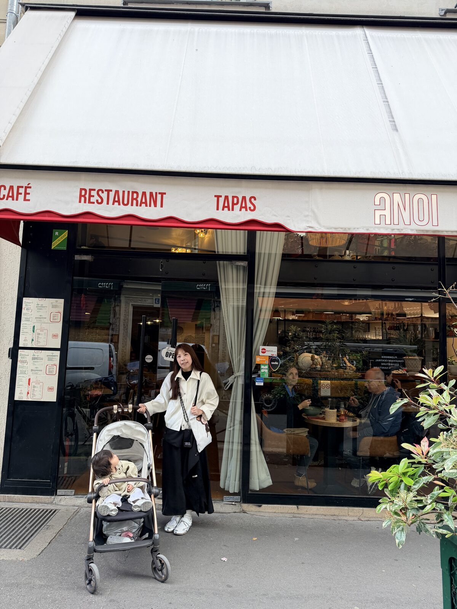
façade · 仰拍 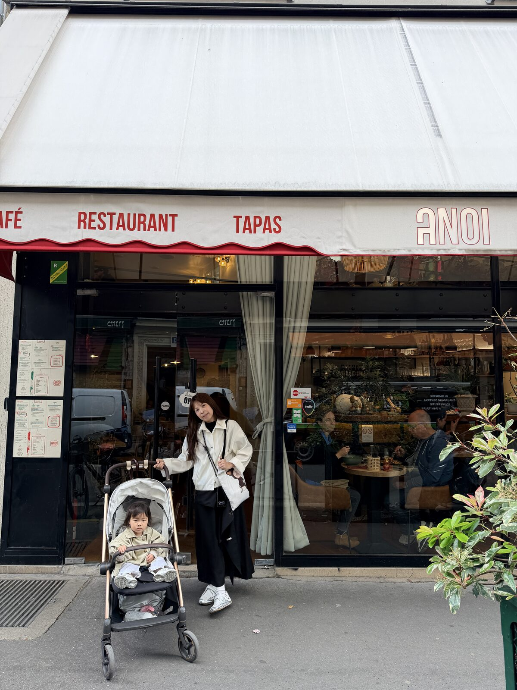
stroller stop 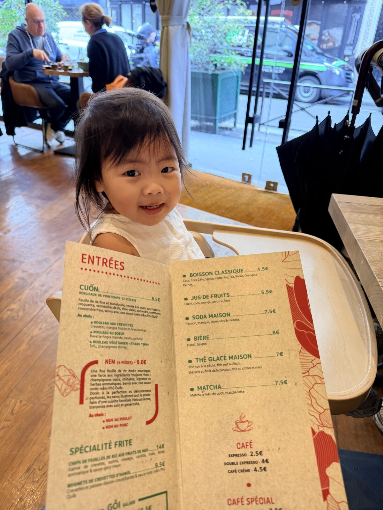
米米 · menu
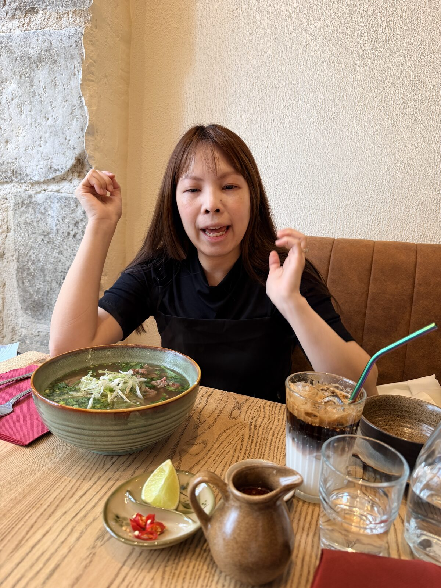
Phở bò · cà phê sữa đá 綠陶碗、清湯、薄切牛肉、白蔥絲、香菜。配檸檬角和紅辣椒。阿米的越南冰咖啡分層,煉乳沉在底下。她舉手準備開吃的瞬間,被我抓拍下來。
"好久沒吃亞洲食物了。"
— Day 12, lunch · ANOI
從 Day 1 馬德里出發到現在第 12 天,我們吃過 tapas、pintxos、葡式炭烤、ovos moles、Air France 法餐、Five Guys —— 進歐洲一路 11 天,直到今天才碰到第一碗熱湯麵。那種「身體想要的味道」的感覺,湯一喝下去就鬆了一口氣。
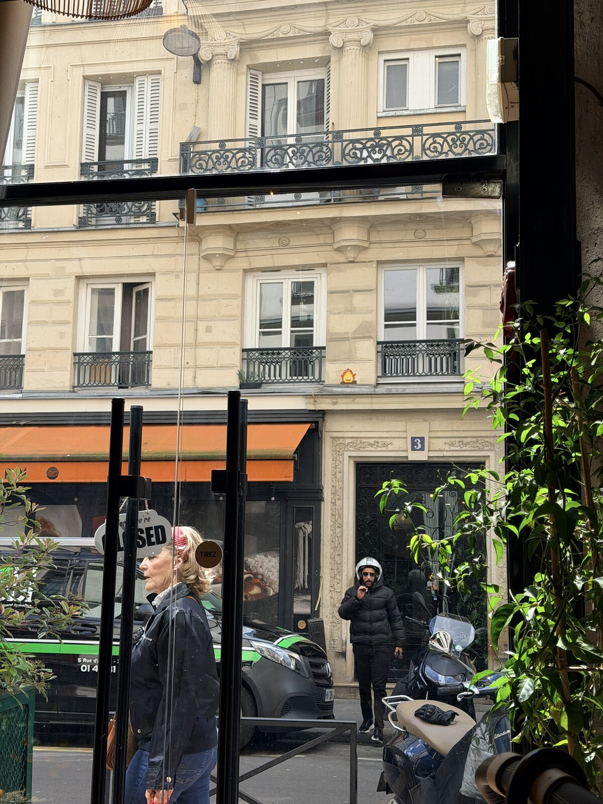
view from window 奧斯曼式立面、鍛鐵雕花陽台、停在街邊的綠白 Vespa。一個騎機車的大叔走過。和台北的越南河粉店外面那條街,差了 9778 公里。
§ Quatre · Plot Twist
Street · 9ème · all day
街頭的像素入侵者
An unexpected collection begins.
在 ANOI 排隊的路上,牆角貼著一隻小小的像素孫悟空 —— 金黃頭髮、橘色道服,大概手掌大小,馬賽克磁磚拼成。本來以為是路人塗鴉,後來在河粉店的窗戶外又看到第二隻 —— 二樓陽台旁邊一個像火苗或瑪利歐火花精靈的像素圖。
原來這是法國街頭藝術家 Invader 從 1998 年開始的全球計畫。他在世界各大城市貼上像素風格的馬賽克磁磚,巴黎是大本營 —— 到 2025 為止巴黎已經有超過 1500 件。每塊都有編號,粉絲用官方 app「FlashInvaders」掃描積分,像在玩寶可夢 GO 的真實世界版。
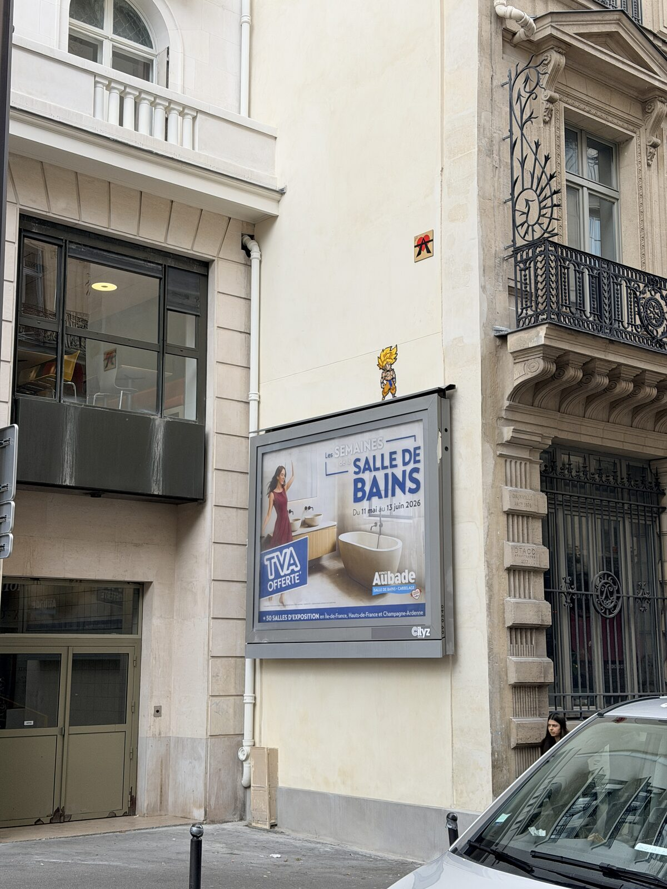
Goku · 9ème Fire spirit · ANOI window
// Day 12 Invader collection_
> Lisboa 的字牌收集已結束(Day 7–10)。
> Paris 的新支線開啟:Invader 馬賽克磁磚。
> Day 12 收穫:
01 · Super Saiyan Goku · 9ème · 中午02 · Pixel Fire · ANOI 對面陽台 · 13:30
§ Cinq
Passage Jouffroy · Passage des Panoramas · 15h00
拱廊街考古 les passages
Glass-roofed shopping, 1800s edition.
吃飽之後,我們散步往 Boulevard Montmartre 方向走,鑽進了兩條老巴黎特有的東西:covered passages —— 有玻璃天棚、煤氣燈時代留下來的拱廊街。可以理解成「19 世紀的百貨公司前身」。
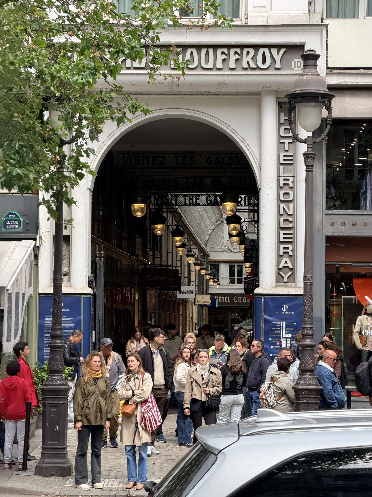
Passage Jouffroy · 1845 門楣寫著 JOUFFROY,右邊豎招牌 HÔTEL RONCERAY。入口的歡迎牌寫著 VISITEZ LES GALERIES。
Passage Jouffroy (1845–1847 建)是巴黎僅存的覆蓋式拱廊街之一,馬賽克地板、玻璃天棚、鍛鐵裝飾,煤氣燈時代的氣味全留下來了。德國思想家華特·班雅明的未完成大作《拱廊街計畫》(Passagen-Werk ),就是把這種空間當成現代消費文化的考古現場。
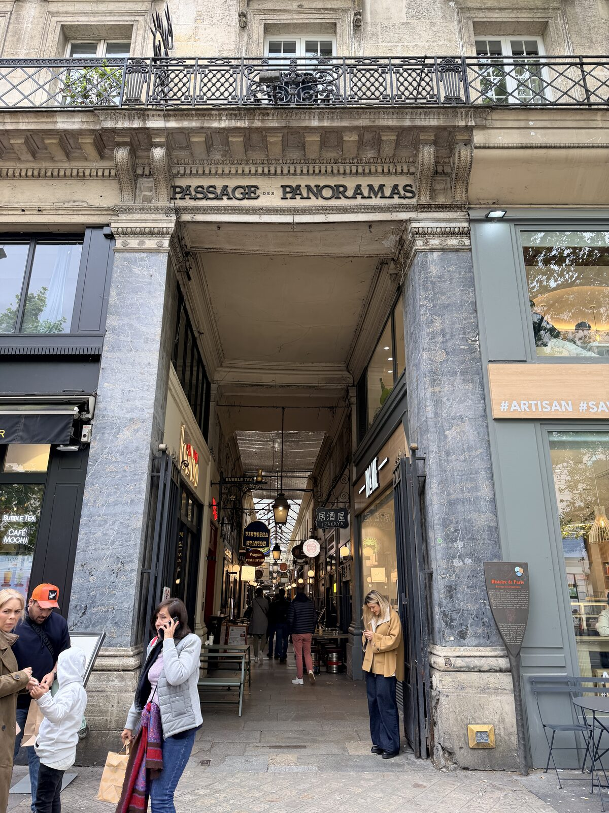
Passage des Panoramas · 1799 過個馬路就到。巴黎最古老的拱廊街,1799 年開業 —— 比 Jouffroy 還早了 46 年,等於法國大革命剛結束沒多久的東西。
Passage des Panoramas 的名字來自當年裡面有兩座大型 360° 全景畫展覽館 —— 算是早期的沉浸式娛樂,VR 的祖宗。現在裡面是混搭餐廳街,還掛著日式居酒屋的招牌(居酒屋 IZAKAYA )。世界繞了一圈又回到了這裡。
時代層次 · 巴黎這座城市的有趣之處,就是消費空間的歷史層次極長:Passage des Panoramas(1799)→ Passage Jouffroy(1845)→ 老佛爺穹頂(1912)→ 香榭麗舍的 Five Guys(2026)。都是「玻璃 + 室內逛街」的同一種需求,只是隔了 227 年。
§ Six
Galeries Lafayette Haussmann · La Coupole · 16h00
老佛爺穹頂下 La Coupole, 1912
Returning to a place I've been before.
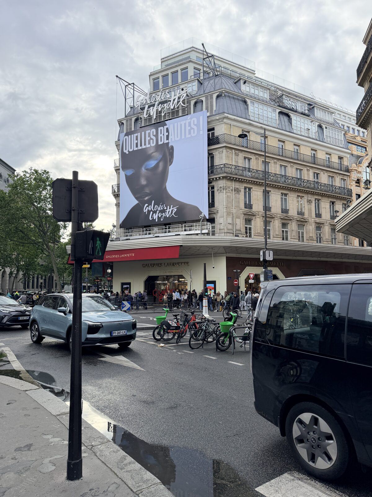
Galeries Lafayette Haussmann 外牆掛著春季活動:「QUELLES BEAUTÉS!」—— 跑到 5/31。陰天的鉛灰色巴黎,跟老佛爺白色 logo 的對比意外好看。
三年前我們來過老佛爺。那次也是在這個穹頂下走過、在頂樓餐廳吃過飯 —— 那次的結論跟在馬德里 El Corte Inglés、在西班牙百貨用餐時一樣:歐洲的百貨美食街便宜又划算,跟台灣百貨美食街完全相反 。
三年後再回到同一個穹頂下,只是多了一個米米。Day 11 的 LV Neverfull「東西回到製造地」,Day 12 變成「人回到去過的地方」—— 同一個母題,不同的對象。
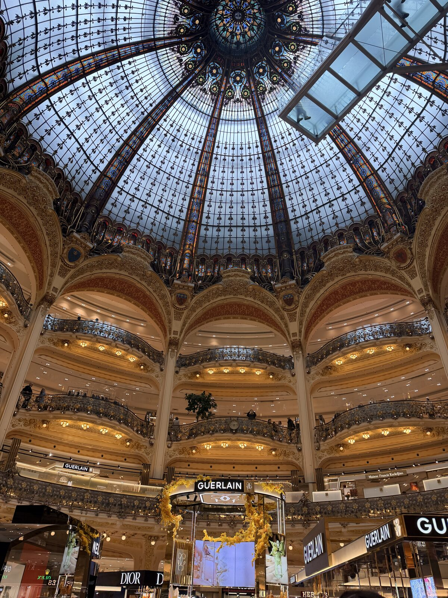
La Coupole · 1912 設計師 Ferdinand Chanut,彩繪玻璃出自 Jacques Gruber,離地約 43 公尺。下面正是美妝香水樓層:Guerlain、Dior、Maison Francis Kurkdjian。
這個穹頂是 1912 年完工的拜占庭新藝術風格(Art Nouveau) —— 也就是說,Passage Jouffroy 蓋好 67 年後、巴黎人決定不要再把消費空間擠在窄窄的拱廊裡,要蓋一個大教堂級別的圓頂百貨。彩繪玻璃 + 陽台層層往上、像一個倒過來的歌劇院。
§ Sept
Galeries Lafayette · Étage Enfants · 17h00
逛百貨變了 Now with a toddler
A new layer of brand-knowledge unlocked.
三年前我們在老佛爺主要逛精品和保養品。今年因為有了米米,整個逛街的「樓層地圖」都重新洗了一次 —— 三樓童裝、童玩具樓層忽然變成核心。逛了一圈才發現,因為有小米,我們知道了很多以前完全不認識的品牌 :Bunnies by the Bay、Jellycat、Doudou et Compagnie、Trousselier…… 都是「孩子在的人才會認識的世界」。
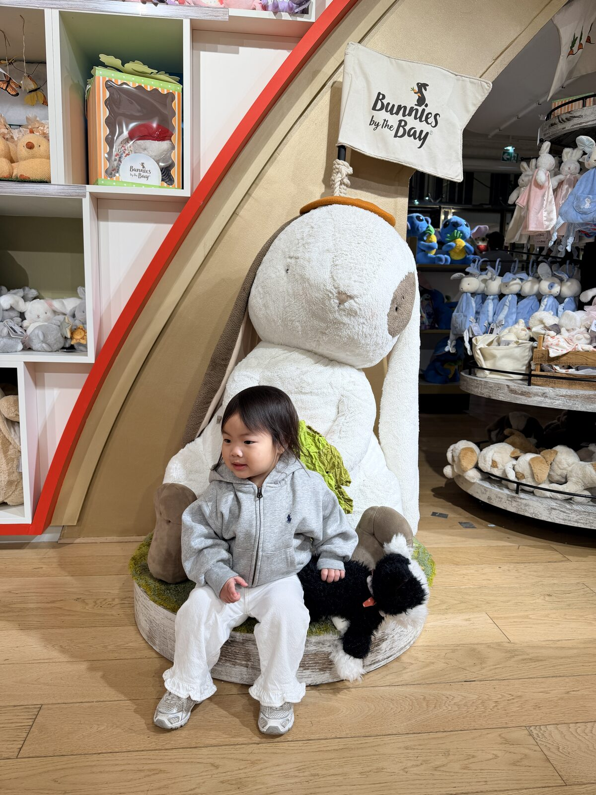
Bunnies by the Bay corner 米米穿 Polo 連帽外套 + 白色荷葉邊褲 + 小白鞋,坐在大兔子玩偶腳邊,旁邊還抱著一隻黑白柯利狗玩偶。Bunnies by the Bay 是 1987 在美國西雅圖創立的童玩具品牌。
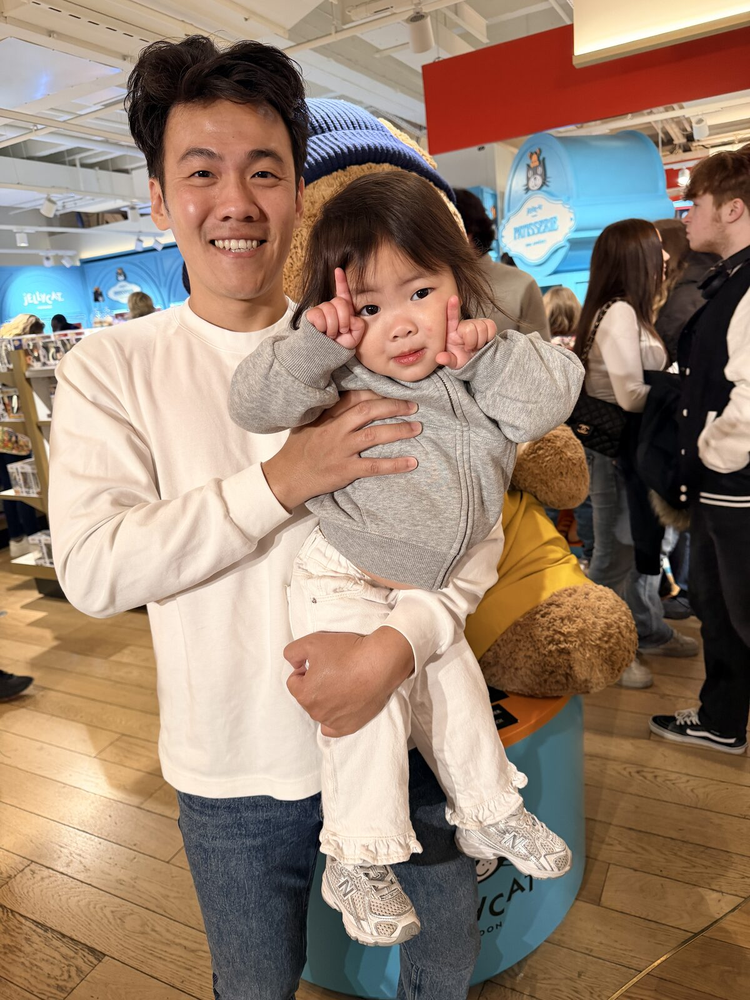
Jellycat London · papa & 米米 米米雙手比 V,背景是 Jellycat 老佛爺專櫃 LONDON 字樣。這張是阿米偷拍的。
這次給米米買了一堆東西。從前我們進百貨是給自己看,現在進百貨是為了她。買得超開心,結帳的數字看一眼就過了 —— 這大概也是當父母才知道的消費邏輯。
§ Huit
Galeries Lafayette · Lounge · 18h00
中場休息 l'entracte
Intermission with a 1-year-old.
逛累了。米米也累了。老佛爺裡面有一個 lounge,沛綠雅小綠瓶、橘子汁、零食小袋、艾菲爾鐵塔造型擺飾,芥末黃 boucle 扶手椅可以坐 —— 阿米把米米抱在腿上餵水,小米一手抓著玻璃水杯一手抓著餅乾,認真地咬。
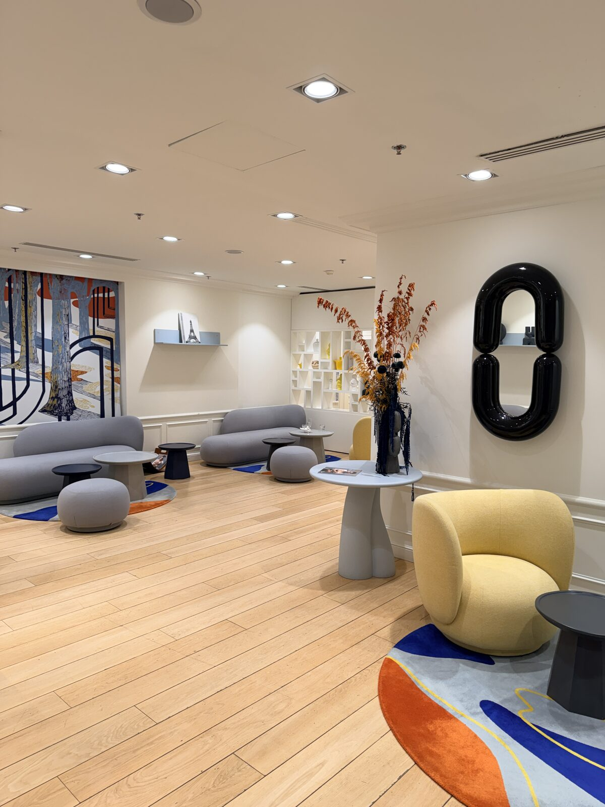
Lounge interior 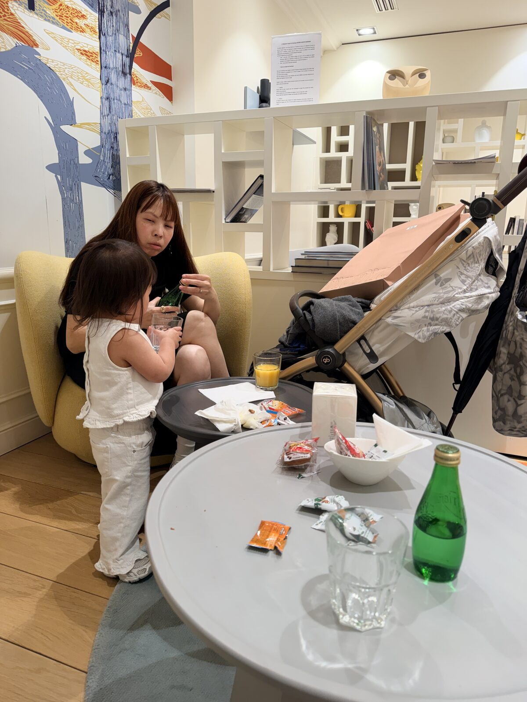
水 + Perrier · 18:10
這種l'entracte (中場休息)的時間,反而是最有畫面感的部分。整天的儀式中間插進來一個「兩個人在沙發上喘氣」的鏡頭,比凱旋門和穹頂都更接近真實的旅行。
§ Neuf
Grand Café Capucines · 4 Bd des Capucines · 20h57
跨海重逢 Réunion
An old friend, met in a 1875 brasserie.
扶輪社認識的朋友,現在在法國讀書。在巴黎能約得到實在是緣分,我們挑了 Grand Café Capucines —— 一間 1875 年開業的 Belle Époque 老牌 brasserie,就在歌劇院(Opéra Garnier)旁邊。Opéra Garnier 也是 1875 年開幕的 —— 兩個傳奇同年。
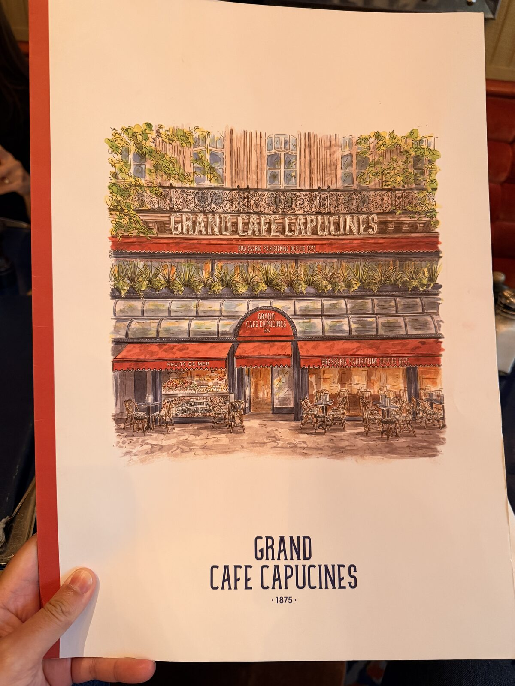
Le Grand Café · menu 菜單封面是手繪水彩:綠色藤蔓、紅色 awning、FRUITS DE MER。1875 年到現在,151 年了。
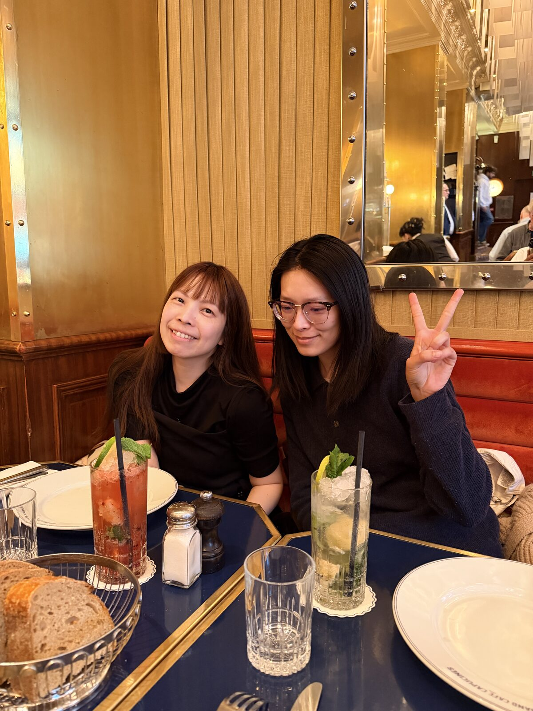
Réunion · mojitos 紅絨座椅、金色簾子、棕色皮革鑲邊 —— Belle Époque brasserie 的經典裝潢。兩杯 Virgin Mojito,一綠一粉(草莓口味)。
Beurre Charentes-Poitou A.O.P. Demi-Sel · 麵包附的奶油是法國唯一獲得 AOP 原產地保護的奶油(1979 開始),產地在法國西南部 5 個省。半鹽款,米其林餐廳的標配。Brasserie 願意上這款奶油,代表餐廳本身的等級不會太差。
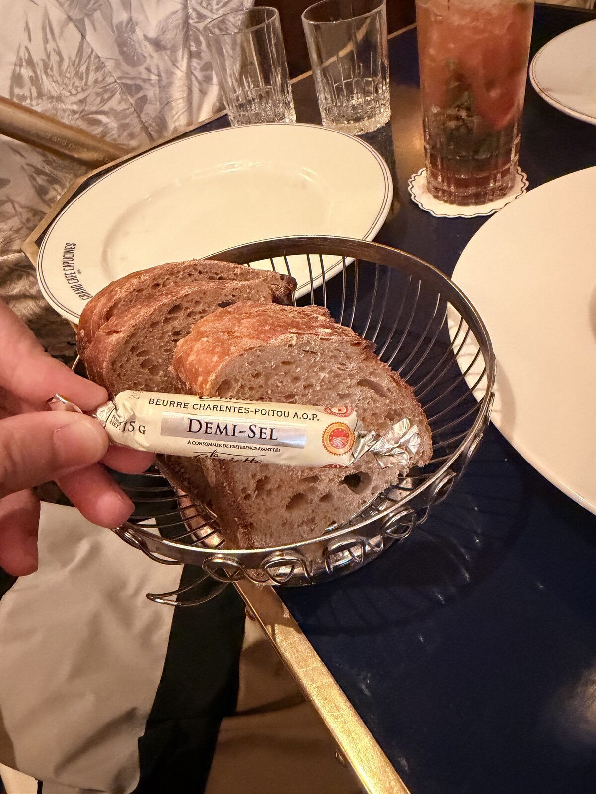
Bread & A.O.P. butter 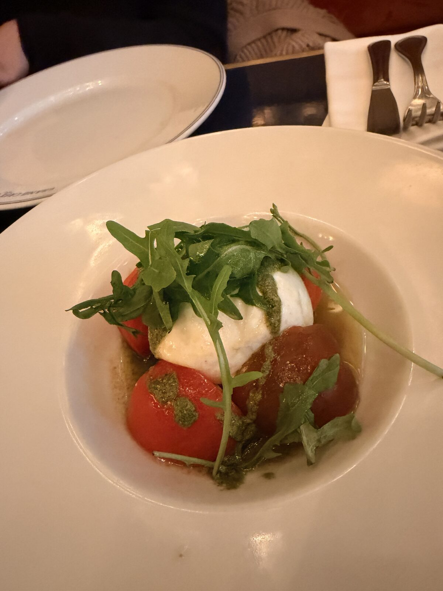
Burrata · 15.50€ 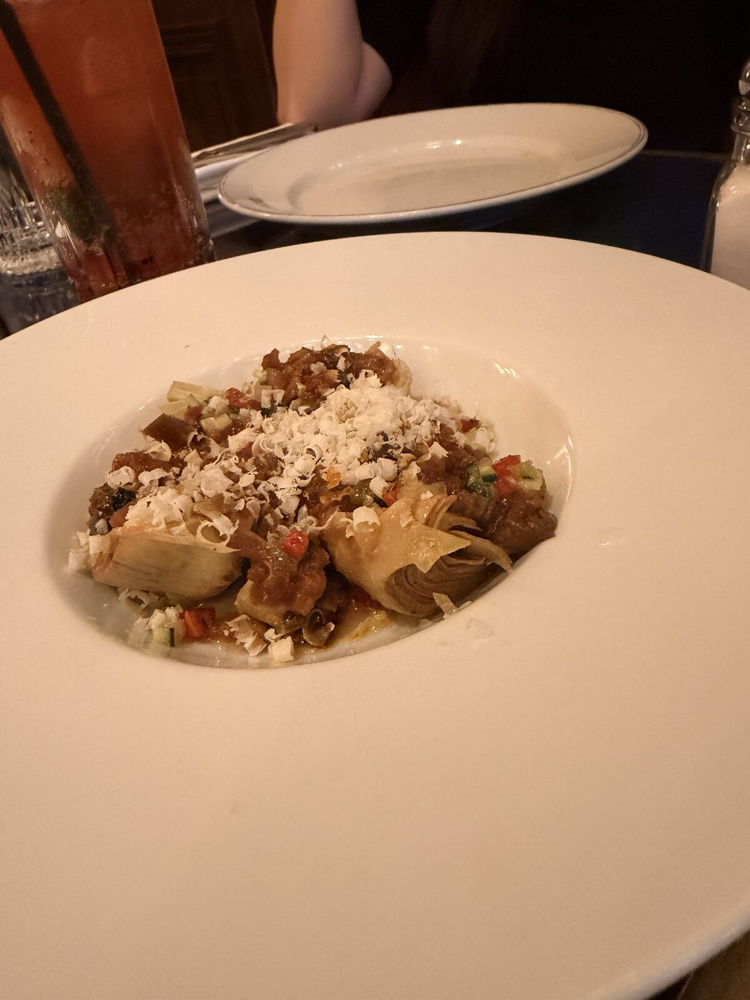
Artichauts · 14.50€
前菜 :阿米的朋友點了 Burrata des Pouilles (義大利 Puglia 的布拉塔,15.50€)—— 番茄、火箭菜、青醬,新鮮起司剖開來流心。另一道 Artichauts Poivrade (普羅旺斯春季紫朝鮮薊,14.50€)—— 配義式生牛肉碎和刨片起司。Poivrade 是小型紫色朝鮮薊的法文名,因為形狀像胡椒罐。
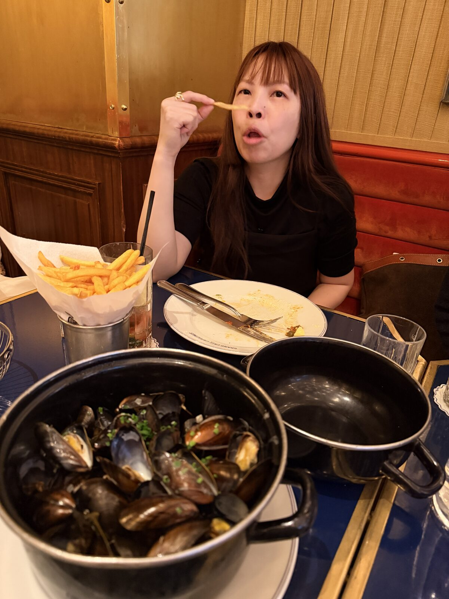
Moules Chablis · frites 阿米點的:夏布利白酒淡菜(22.50€),配薯條。她咬薯條的瞬間表情。淡菜是貝類,在阿米的飲食安全範圍內。
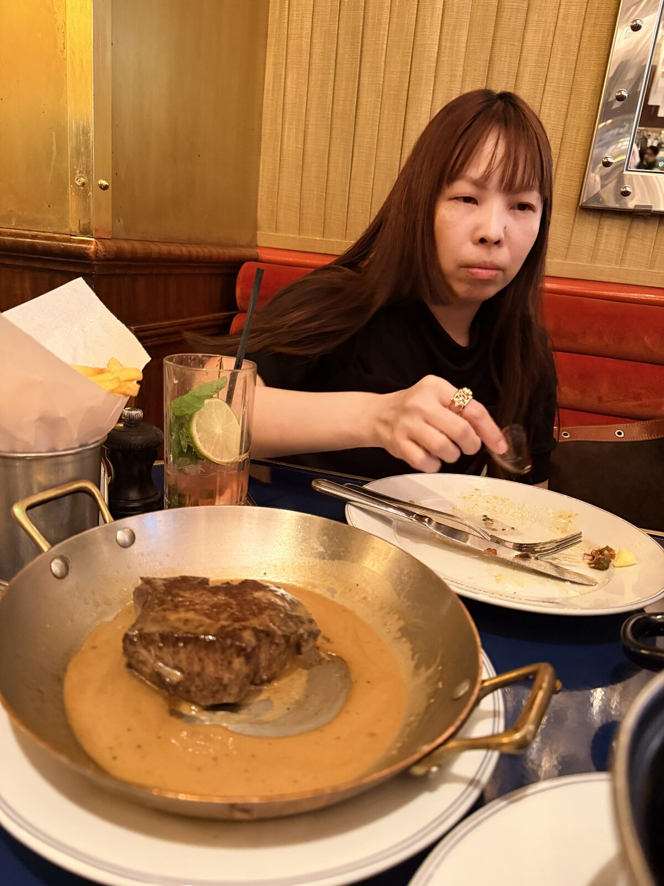
Filet au Poivre · 45.50€ 綠胡椒奶油醬菲力牛排 —— Grand Café 的招牌之一,銅鍋上桌。Sauce au poivre vert 通常用 Cognac 干邑點火做出來。
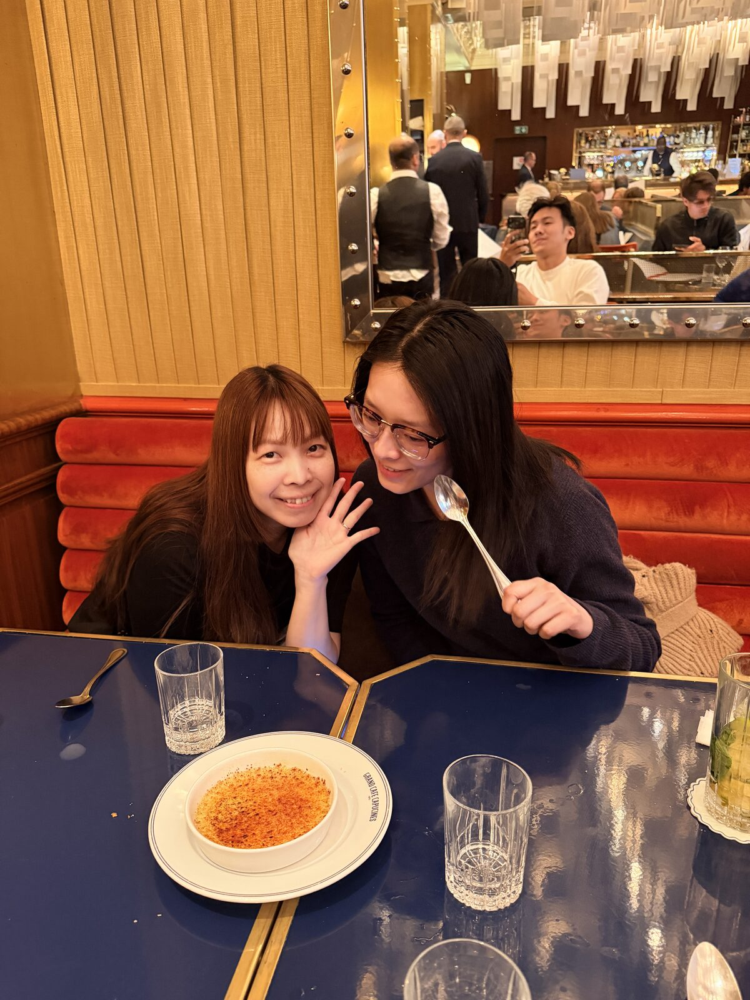
Crème Brûlée · finale 焦糖脆殼烤得均勻。朋友拿著大湯匙準備敲,阿米托著腮對鏡頭笑 —— 這張大概是 Day 12 最像 Day 12 的一張。
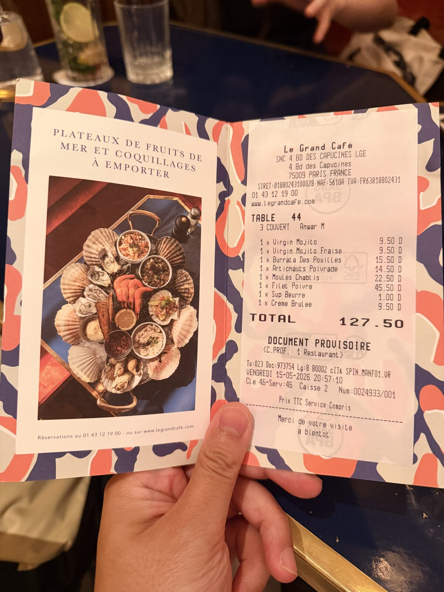
L'addition · 20:57 小冊形式的帳單,左頁是海鮮拼盤的外帶廣告,右頁是收據明細。Table 44 · 3 couverts · 收銀員 Anwar M。
Le Grand Café · Table 44
15-05-2026 · 20:57:10
1× Virgin Mojito 9.50 €
1× Virgin Mojito Fraise 9.50 €
1× Burrata des Pouilles 15.50 €
1× Artichauts Poivrade 14.50 €
1× Moules Chablis 22.50 €
1× Filet au Poivre 45.50 €
1× Sup Beurre 1.00 €
1× Crème Brûlée 9.50 €
TOTAL · Service Compris 127.50 €
+ pourboire (5%) 6.37 €
PAID 133.87 €
小費陷阱 · 帳單已寫 Service Compris,但侍者刷卡機螢幕跳出小費選項。法國人自己很少加,觀光區的店知道外國人不知道這條規矩。下次學起來。
§ Dix · Plot Twist
Conclusion · 21h30
我覺得西班牙跟葡萄牙的餐廳比較好吃
An unexpectedly honest verdict.
飯吃完,離開店門口,阿米說:「我覺得西班牙跟葡萄牙餐廳比較好吃。」
這話聽起來像背叛(畢竟巴黎是世界美食之都的神話太強),但其實非常有道理。Grand Café 三人 €127.50,人均 €42,給的菲力牛排其實不大塊。同樣的錢在西班牙可以三人吃到撐還有酒,在葡萄牙更是直接超值。西葡的菜系是「食材主義」 —— 烤章魚、伊比利火腿、海鮮飯,核心是食材本身。法國 brasserie 是「手法主義」 —— 醬汁、技法、擺盤,食物本身被「處理」過。
這 12 天的味覺累積,讓這句話特別有重量。Day 1–10 我們在西葡吃的所有東西,核心都是「食材講話」;Day 11 法航商務艙 + Day 12 Grand Café,則是「儀式講話」。喜歡前者的人,會覺得後者過度修飾。
"巴黎的儀式,擋不住西葡的食材直球。"
— Day 12 verdict · 21:30 Bd des Capucines
ARC DE TRIOMPHE
§ Un · 11:42
ANOI · pho
§ Trois · 13:00
PASSAGES
§ Cinq · 15:00
GALERIES LAFAYETTE
§ Six–Huit · 16:00–18:00
GRAND CAFÉ
§ Neuf · 20:57
Day 12 · 巴黎的一日步行
FROM L'ÉTOILE TO L'OPÉRA · RER A + footwork
N ↑ · not to scale · via RER A
● 主要停點
— — 步行軸線
Day 12, en chiffres
11h
起床時間
睡飽的早晨,沒人催。La grasse matinée。
1875
Grand Café 創立年份
和 Opéra Garnier 同年開幕。151 歲了。
1912
老佛爺穹頂完工年份
設計師 Ferdinand Chanut · Art Nouveau。
1799
Passage des Panoramas 開業年份
巴黎最古老的覆蓋式拱廊街。比 Jouffroy 早 46 年。
2
Invader 收集
Goku + Pixel Fire。新支線開啟。
3yrs
老佛爺重訪間隔
上次來這個穹頂下,還沒有米米。
127.50€
Grand Café 三人晚餐
Service Compris。加被引導的小費後實付 133.87€。
9778km
越南河粉店外的距離
從台北到 ANOI 門口。「好久沒吃亞洲食物了。」
— Fin —
Carnet de voyage · Day 12 · 15.V.2026 · Paris
Day 12 的主角是兩條相反的情感弧線:跨海重逢 vs 想念家鄉味。Grand Café 那場飯把兩條都包了。